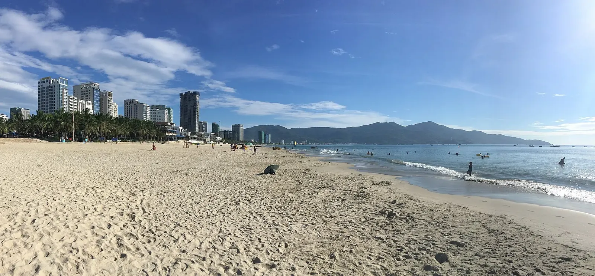
Biển
Mỹ Khê
Bờ cát dài ngay sát thành phố. Sáng sớm là lúc người dân xuống tắm biển và ngư dân kéo thúng chai lên bờ.
Ảnh: Christophe95 · CC BY-SA 4.0
Miền Trung · Việt Nam
Nơi núi đi ra tận biển, sông Hàn chảy giữa lòng phố, và mỗi ngày bắt đầu khi thúng chai về bờ.
Sông Hàn lúc hoàng hôn · Ảnh: Quangpraha / Wikimedia Commons · CC0
Phía bắc là đèo Hải Vân. Phía đông là biển. Ở giữa, sông Hàn chia thành phố làm hai bờ, và những cây cầu nối chúng lại.
Sơn Trà, Ngũ Hành Sơn, Bà Nà, Hải Vân. Đứng trên bãi biển, quay lại vẫn thấy núi.
Sông Hàn chảy qua trung tâm rồi đổ ra vịnh. Đêm xuống, các cây cầu lần lượt lên đèn.
Bờ cát dài, thoải, chạy từ chân Sơn Trà về phía nam, qua Mỹ Khê tới Non Nước.
01 · Thiên nhiên
Từ trung tâm, đi không xa là tới rừng, tới đỉnh núi trong mây hay hang đá. Phần lớn thời gian còn lại, bạn sẽ ở gần biển.

Biển
Bờ cát dài ngay sát thành phố. Sáng sớm là lúc người dân xuống tắm biển và ngư dân kéo thúng chai lên bờ.
Ảnh: Christophe95 · CC BY-SA 4.0
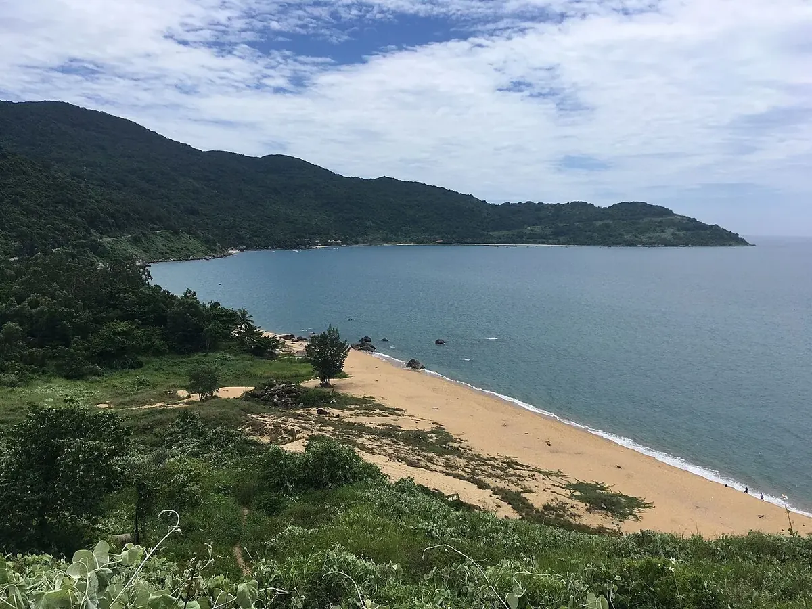
Ảnh: Christophe95 · CC BY-SA 4.0
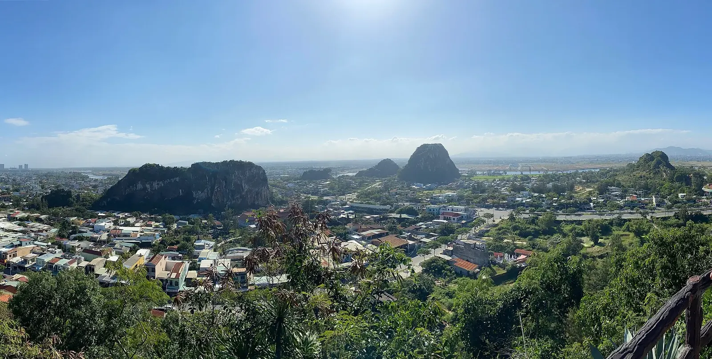
Ảnh: Kuroczynski · CC BY-SA 4.0
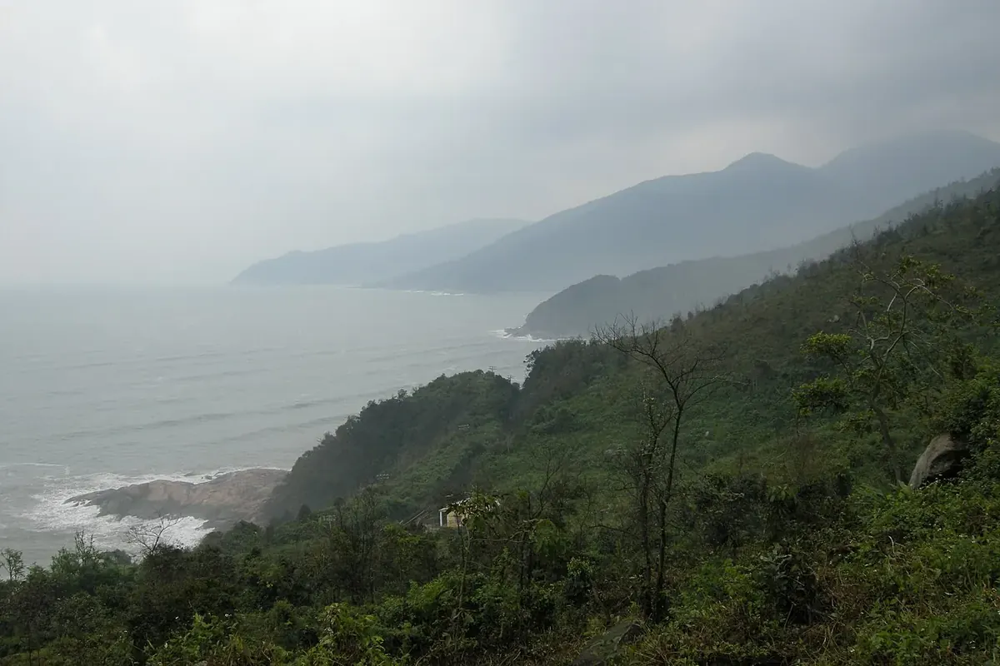
Ảnh: Vyacheslav Argenberg · CC BY 4.0
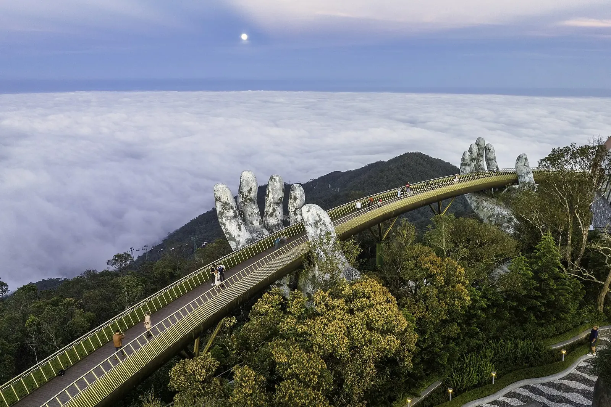
Ảnh: Vivu Vietnam · CC BY-SA 4.0
02 · Văn hóa
Phố buôn cổ, điêu khắc Chămpa, chùa bên biển, cây cầu hiện đại. Đà Nẵng và vùng lân cận giữ nhiều lớp lịch sử chồng lên nhau.
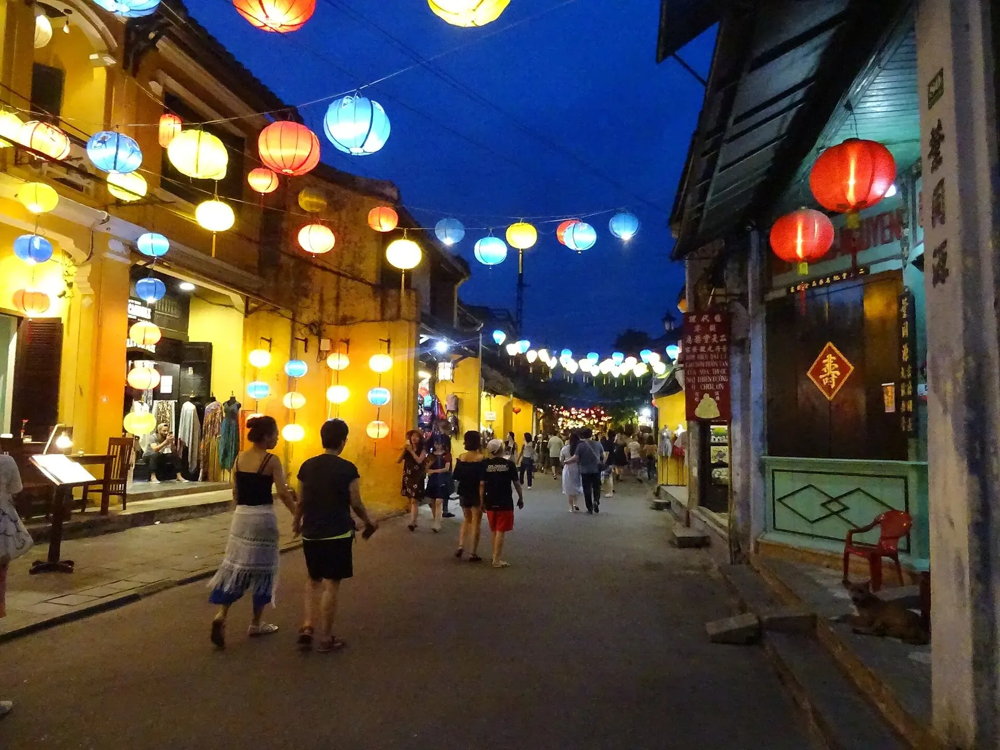
Di sản
Từng là một thương cảng sầm uất, Hội An còn giữ những dãy nhà gỗ, hội quán và Chùa Cầu. Phố cổ được UNESCO ghi danh là Di sản Thế giới năm 1999. Khi trời tối, đèn lồng thắp sáng khắp các con phố.
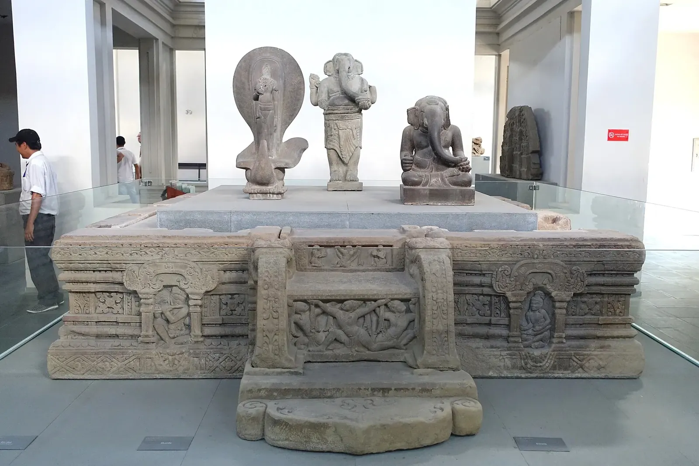
Chămpa
Bên bờ sông Hàn, bảo tàng lưu giữ tượng thần, phù điêu, bệ thờ bằng đá sa thạch của vương quốc Chămpa xưa. Bệ thờ trong ảnh mang từ khu đền tháp Mỹ Sơn về.
Bệ thờ Mỹ Sơn E1 · Ảnh: Daderot · CC0
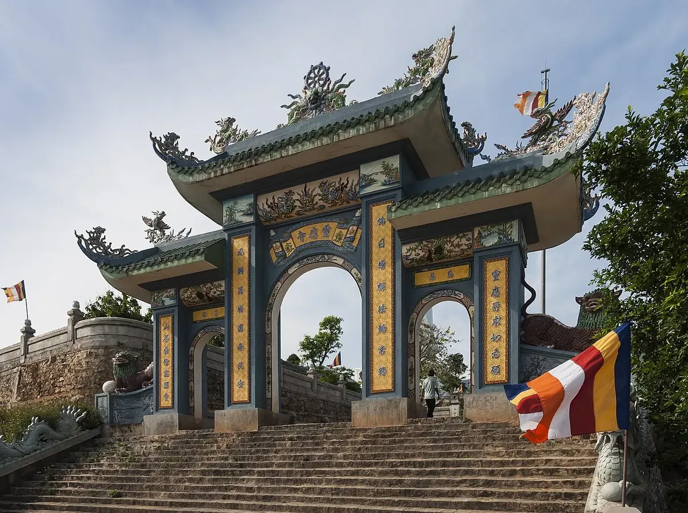
Tâm linh
Ngôi chùa trên sườn bán đảo Sơn Trà, nhìn thẳng ra vịnh. Pho tượng Quan Âm màu trắng của chùa nhìn thấy được từ nhiều nơi dọc bờ biển.
Ảnh: CEphoto, Uwe Aranas · CC BY-SA 3.0
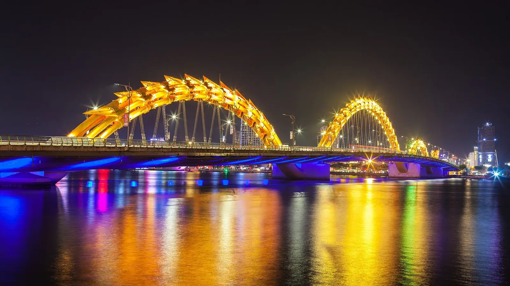
Hiện đại
Cây cầu hình con rồng uốn mình qua sông Hàn. Vào một số tối cuối tuần, đầu rồng phun lửa và phun nước. Nên xem lịch trước khi đi.
Ảnh: Supanut Arunoprayote · CC BY 4.0
03 · Bản đồ
Chín điểm đến trong trang, từ đèo Hải Vân ở phía bắc tới phố cổ Hội An ở phía nam. Chọn một điểm để xem vị trí, rồi mở trang chi tiết.
04 · Con người
Người Đà Nẵng nói giọng Quảng, thẳng và ấm. Trước khi phố thức dậy, nhiều người đã làm xong một phần ngày của mình.
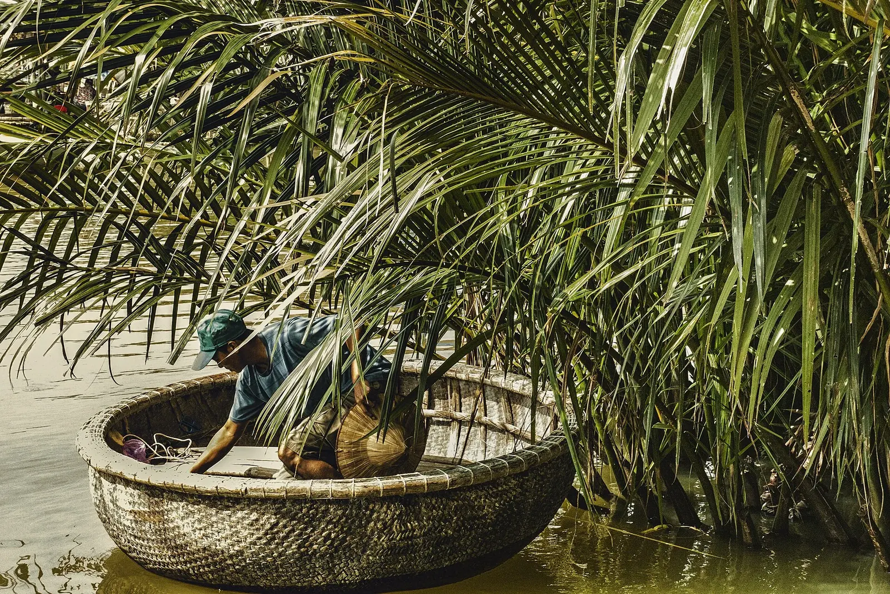
Nghề biển
Thúng chai là chiếc thuyền tròn đan bằng tre, trét kín cho khỏi thấm nước. Ở các bãi biển Đà Nẵng, bạn vẫn thấy ngư dân chèo thúng ra khơi, quăng lưới rồi mang mẻ cá vào bờ khi trời vừa sáng.
Đến Đà Nẵng, hãy dậy sớm một hôm. Thành phố đẹp nhất vào lúc người ta bắt đầu làm việc.
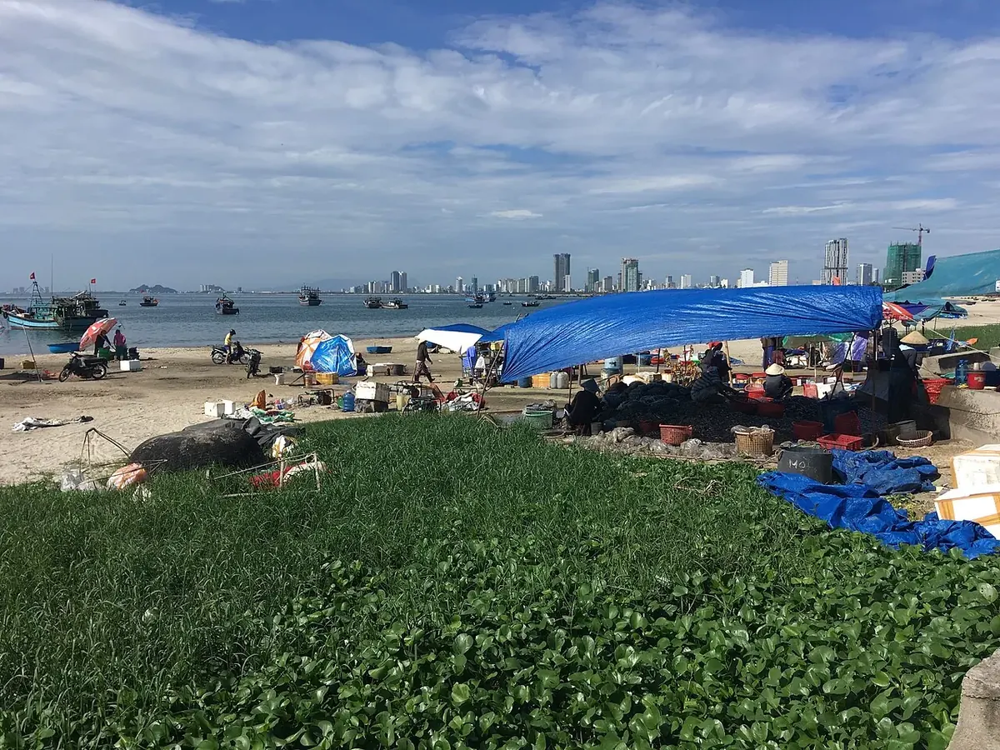
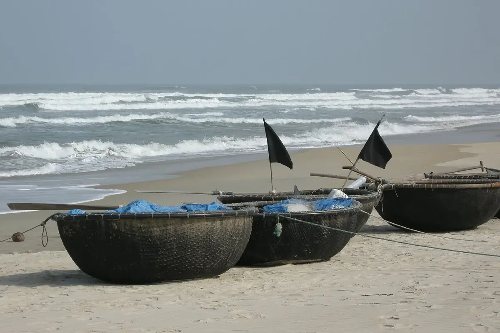
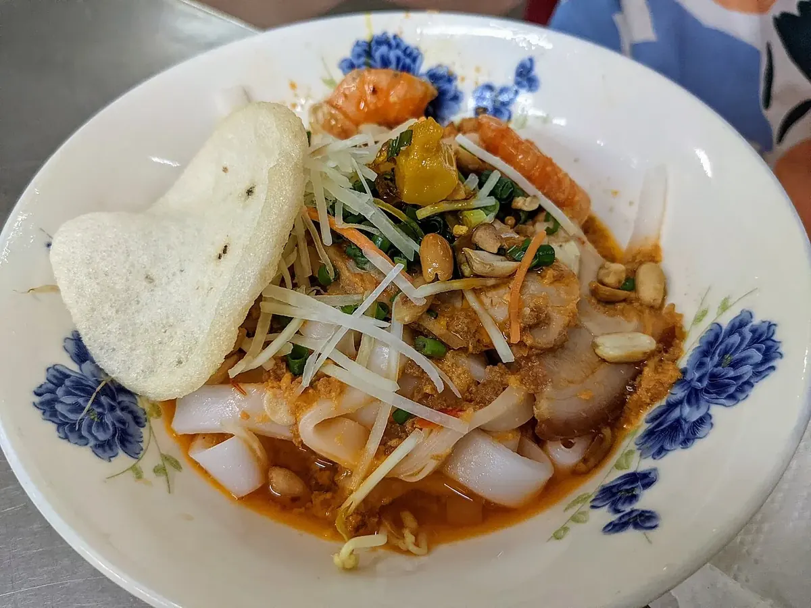
06 · Gợi ý
Sáu điểm dừng, từ bình minh tới lúc phố lên đèn. Đây là gợi ý tham khảo. Giờ mở cửa, giá vé và lịch sự kiện cần kiểm lại trước khi đi.
Xem thúng chai về bờ, tắm biển khi nắng còn nhẹ.
Lên chùa Linh Ứng, theo đường ven núi nhìn xuống vịnh.
Nghỉ trưa với một tô mì Quảng gần sông Hàn.
Leo bậc đá, vào hang, ghé làng đá Non Nước dưới chân núi.
Đi bộ qua Chùa Cầu và các dãy nhà cổ, ở lại tới khi đèn lồng sáng.
Về lại trung tâm, dạo bờ sông khi các cây cầu lên đèn.
Ảnh trong phần này: Vyacheslav Argenberg (CC BY 2.0), Christophe95 (CC BY-SA 4.0), Christopher Crouzet (CC BY-SA 4.0), Andre Hospers (CC BY 4.0), Steffen Schmitz (CC BY-SA 4.0), qua Wikimedia Commons. Xem danh sách đầy đủ.


.jpg){kind=link}
.jpg){kind=link}